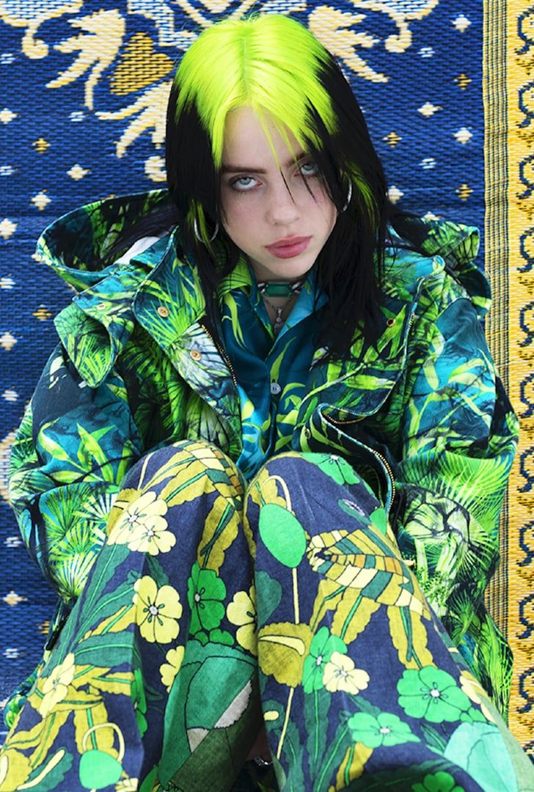
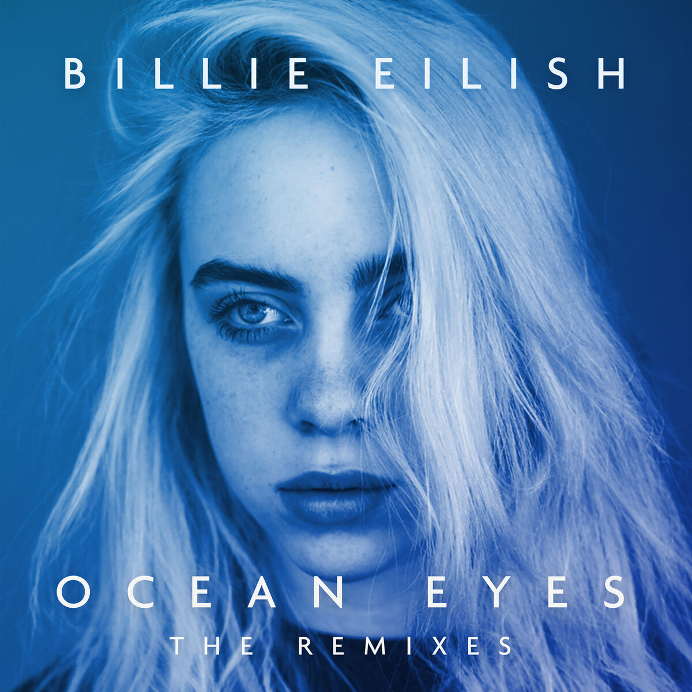
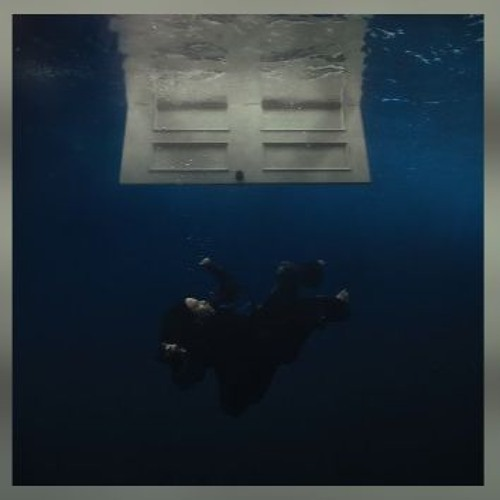

Billie Eilish is a talented singer and songwriter known for her unique sound and style. Her music often explores themes of mental health, self-expression, and individuality, resonating with a wide audience around the world. With her distinctive voice and innovative approach to music, Billie Eilish has become a prominent figure in the music industry, inspiring many with her creativity and authenticity.
Throughout her career, she has received numerous awards and accolades, including multiple Grammy Awards. Billie Eilish's impact extends beyond her music, as she uses her platform to advocate for important social issues and promote positive change. Her influence on pop culture and the music scene continues to grow, making her one of the most influential artists of her generation.

